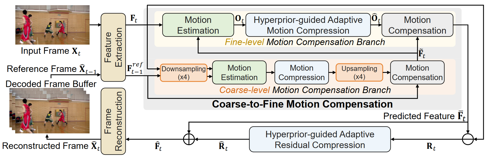
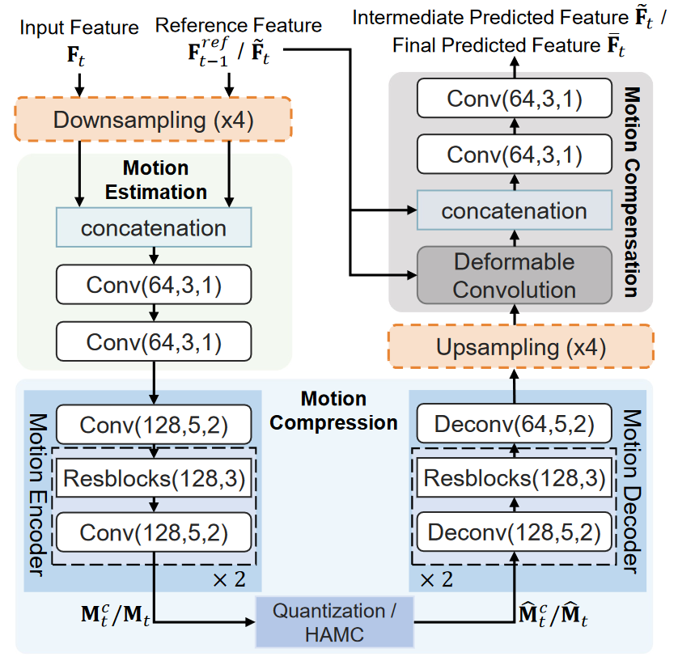
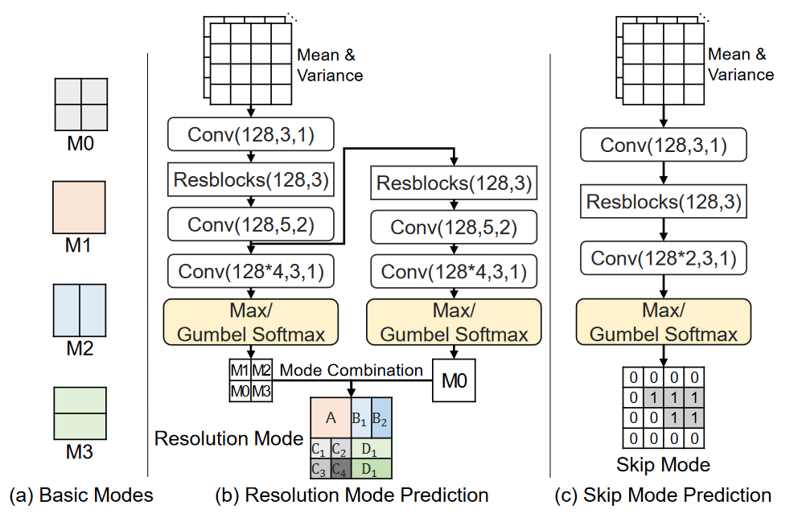
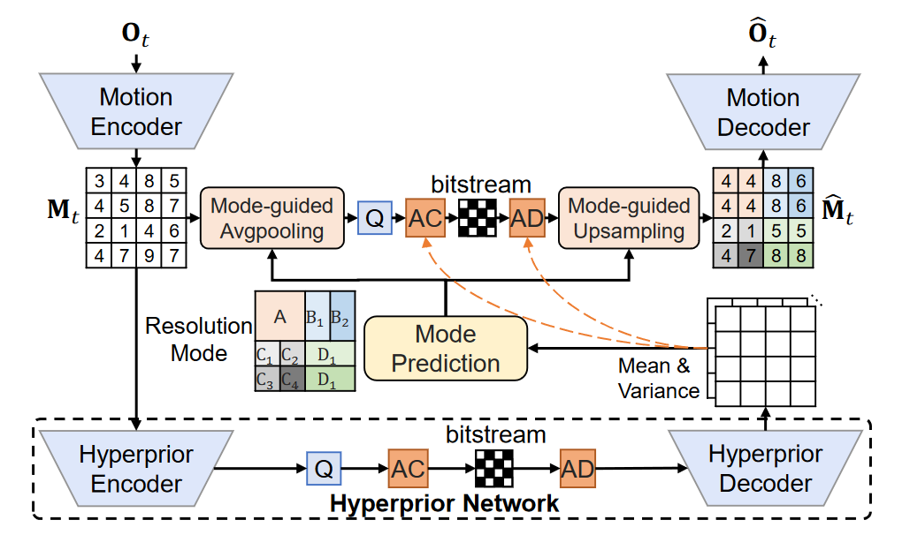

Coarse-to-fine Deep Video Coding with Hyperprior-guided Mode Prediction
Key Points
mode prediction technique
mode prodiction networks by using hyperprior information (i.e., the mean and variance values) from the hyperprior networks contains discriminant statistical information of different patches
skip residual information from each block
coase-to-fine strategy:
optical flow estimation: pyramid structure
video super-resolution: coarse-to-fine alignment strategy
gumbel softmax layer: 离散概率分布
Framework



$F_{t-1}^{ref}$和$F_t$下采样后进行粗粒度的Motion Estimation, Motion Compression再上采样得到粗粒度的offset map后，对$F_{t-1}^{ref}$进行Motion Compensation，得到Coarse-level Motion Compensation Branch结果$\tilde F_t$。将$F_t$和$\tilde F_t$进行细粒度的Motion Estimation, Motion Compression,Motion Compensation，得到最终的$\bar F_t$。以上的网络结果基本参考FVC的设计。

通过Mode Prediction获得Latent Presentation的区域池化合并方案，和残差块忽略方案，进一步节约带宽
The max operation is undifferentiable, so the whole network cannot be end-to-end optimized through back-propagation. To address this issue, during the training process, we adopt the Gumbel softmax strategy to decide the optimal mode as this Gumbel softmax module is differentiable, which thus enables end-to-end optimization for the whole network.
Our proposed HAMC method can automatically select large block sizes in smooth areas with less significant motion patterns for bit-rate saving and use small block sizes for areas around moving object boundaries for achieving more accurate motion compensation results.
Bit estimation network
Without using the time-consuming auto-regressive model to estimate the bits for compressing
Simple bit-estimation network
Related work 前置工作
FVC: A new framework towards deep video compression in feature space
Improving deep video compression by resolution-adaptive flow coding